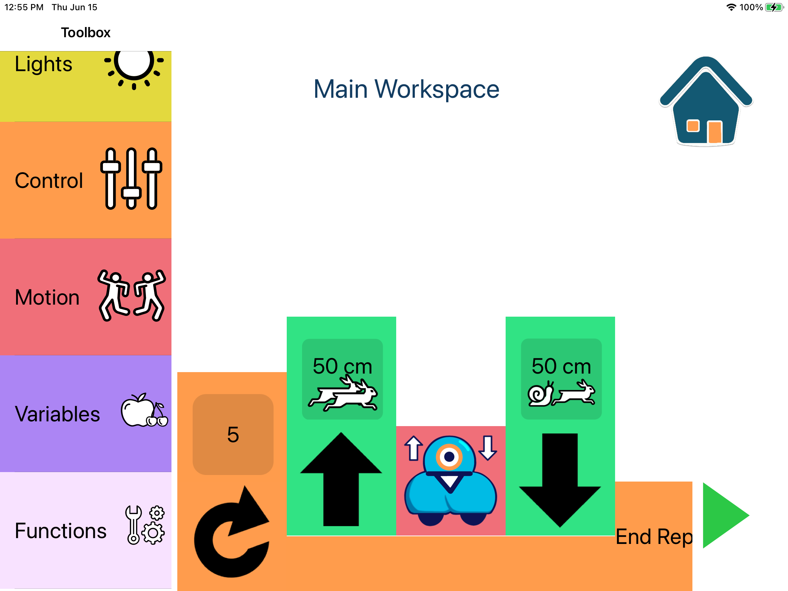

Kyle Suelflow
Home
Projects
Tidy Tuesday
Projects
Categories
All
(6)
Accessibility
(1)
Bayesian Statistics
(1)
Board Games
(1)
Computer Programming
(1)
Demography
(1)
Graphs
(1)
Linear Algebra
(1)
Maps
(2)
Modeling
(2)
R
(1)
Research
(1)
Simulation Study
(1)
Solar
(1)
Spatial Modeling
(1)
Time Series
(1)
Visualization
(1)
Website
(1)
dsfas
Order By
Default
Title
Author
Time Series Solar Analysis
Time Series
R
Solar
A Time Series Approach to Analyzing Historical Trends in Global Horizontal Irradiance
Solar and Wind Energy in the US
Maps
Visualization
Visualizing the Solar and Wind Energy Potential in the United States
Rail Baron Analysis
Linear Algebra
Board Games
Graphs
Using Directed Graphs to Determine the Optimal Strategy in Rail Baron, a Board Game.

Blocks4All
Research
Computer Programming
Accessibility
Website
An Accessible Block Based Programming App
Bayesian Spatial Statistics
Bayesian Statistics
Modeling
Maps
Spatial Modeling
Using INLA and ICAR modeling to predict GDP
Age Heaping in Sub-Saharan Africa
Demography
Modeling
Simulation Study
Age Heaping in Probability Surveys in Low- and Middle-Income Countries: Frequency and Consequences for Mortality Estimation
No matching items